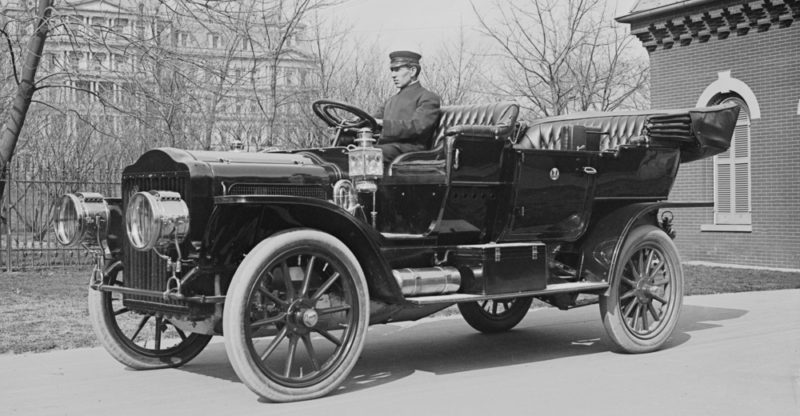
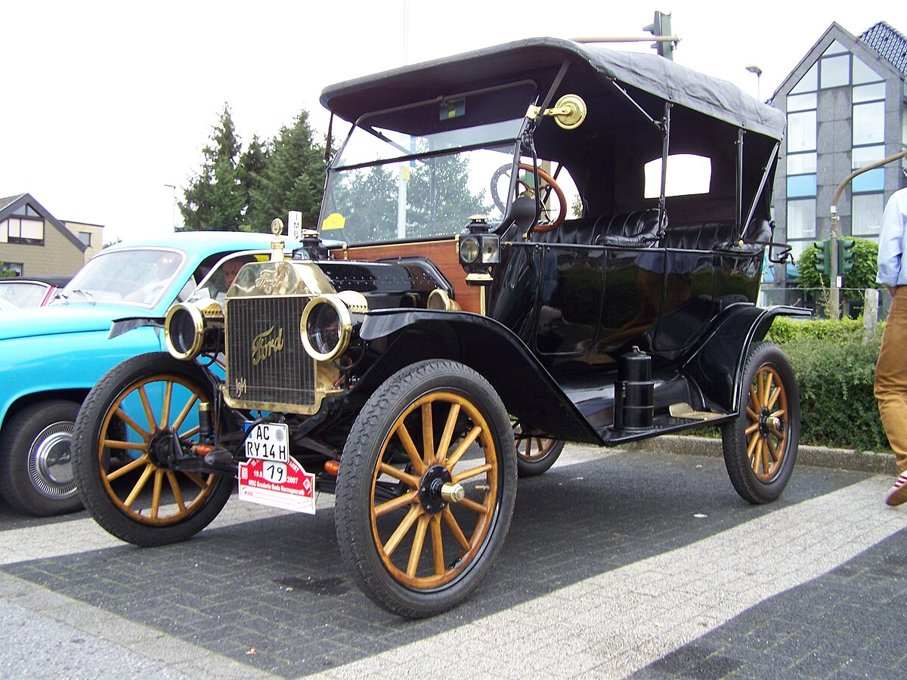
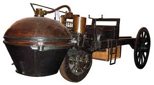
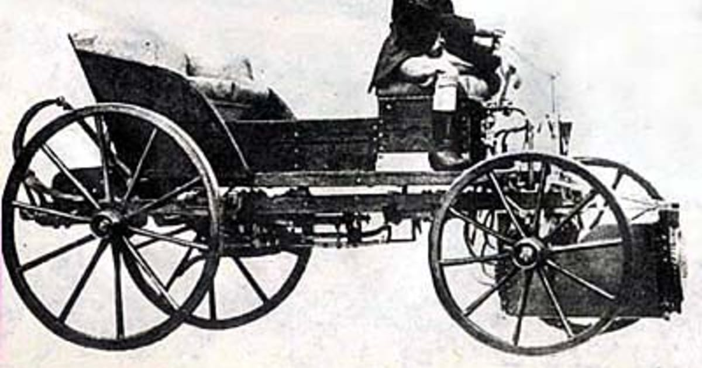
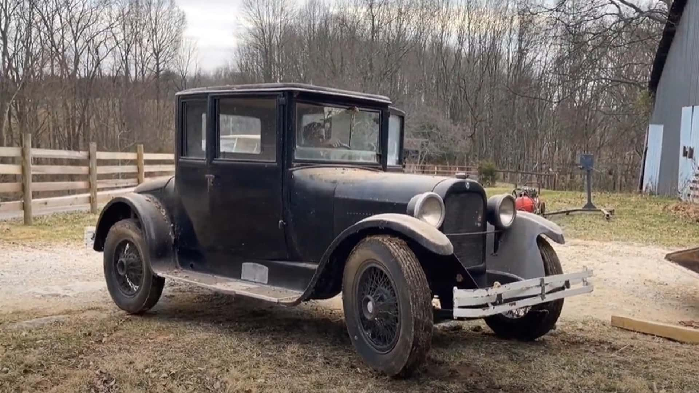
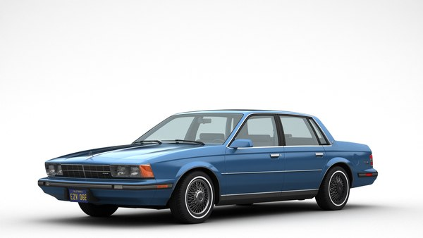
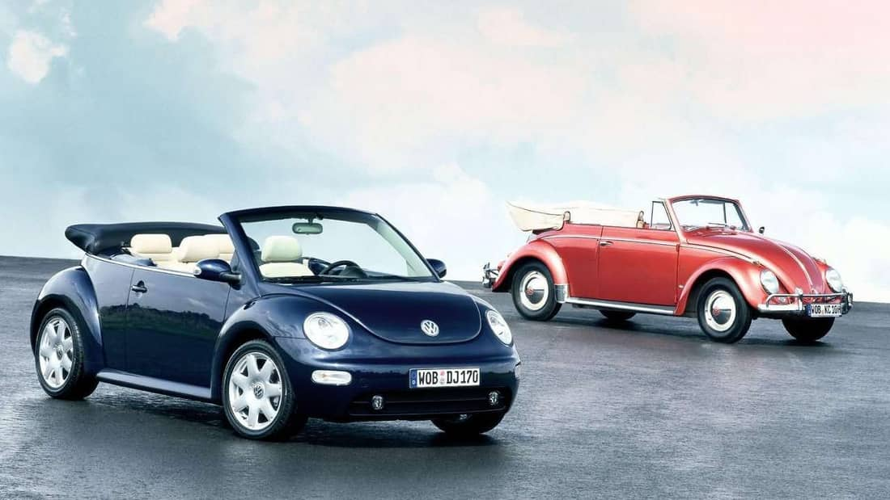

| Año |
FOTO |
DESCPRICION |
| siglo XVIII. |
 |
Los más significativos fueron impulsados por vapor del siglo XVIII. |
| XX |
 |
Los primeros prototipos se crearon a finales del siglo XIX, aunque no fue hasta la primera década del siglo XX donde el público empezó a darse cuenta de su utilidad. |
| 1770 |
 |
construyó un segundo modelo, mayor que el primero, y que tenía la posibilidad de arrastrar 4500 kilos a una velocidad de 4km/h. |
| 1815 |
 |
En 1815 Josef Bozek, construyó un auto con motor propulsado mediante aceite. |
1924 |
 |
Walter P. Chrysler saca al mercado un automóvil con su nombre que es el primero con nombre propio y que incluye frenos hidráulicos y motor de alta compresión. |
| 1988 |
 |
El modelo Chrysler New Yorker es el primer coche americano en implantar el Airbag como equipamiento estándar |
| 2000 |
 |
Honda comienza abriendo el mercado de los híbridos en Estados Unidos con el Insighp, un coche que funciona tanto con gasolina como con electricidad. |